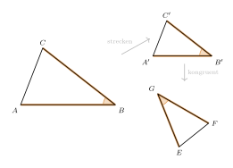
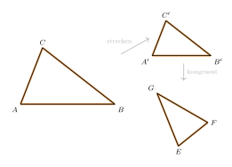
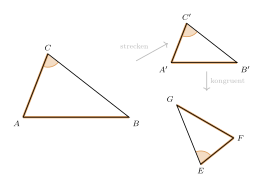

Aufgabe 5.5
Im Kapitel ist der erste Ähnlichkeitssatz bewiesen worden – über eine zentrische Streckung und eine anschliessende Kongruenzabbildung.
Beweisen Sie die drei verbleibenden Ähnlichkeitssätze auf ähnliche Weise.
- Nutzen Sie die Strategie aus dem ersten Ähnlichkeitssatz
- Konstruieren Sie Hilfsdreiecke mit passenden Eigenschaften
- Verwenden Sie bekannte Kongruenzsätze
- Achten Sie auf die Reihenfolge der entsprechenden Seiten
Bezeichnungen wie im Beweis von Satz (I): Das Dreieck $ABC$ hat die Seiten $a$, $b$, $c$ und die Winkel $\alpha$, $\beta$, $\gamma$. Im Dreieck $FGE$ gehört $F$ zu $A$, $G$ zu $B$ und $E$ zu $C$. Die entsprechenden Seiten sind also $f=\overline{GE}$ zu $a$, $g=\overline{EF}$ zu $b$ und $e=\overline{FG}$ zu $c$; die Winkel bei $F$, $G$, $E$ heissen $\alpha'$, $\beta'$, $\gamma'$. $A'B'C'$ ist das gestreckte Dreieck.
| Satz | gegeben | strecken mit | danach |
| (II) | $\beta=\beta'$ und $\frac{a}{c}=\frac{f}{e}$ | $k=\frac{f}{a}$, dann $a'=f$, $c'=e$ | SWS |
| (III) | $\frac{a}{c}=\frac{f}{e}$ und $\frac{b}{c}=\frac{g}{e}$ | $k=\frac{f}{a}$, dann $a'=f$, $b'=g$, $c'=e$ | SSS |
| (IV) | $\gamma=\gamma'$ und $\frac{b}{c}=\frac{g}{e}$, $c>b$ | $k=\frac{g}{b}$, dann $b'=g$, $c'=e$ | SsW |
Satz (II): ein Winkel und das Verhältnis der anliegenden Seiten

Gegeben sind $\beta=\beta'$ und $\frac{a}{c}=\frac{f}{e}$. Man streckt $ABC$ an einem beliebigen Zentrum mit $k=\frac{f}{a}$. Dann ist \[a'=\tfrac{f}{a}\cdot a=f \qquad\text{und}\qquad c'=\tfrac{f}{a}\cdot c=e,\] denn aus $\frac{a}{c}=\frac{f}{e}$ folgt $\frac{f}{a}=\frac{e}{c}$. Der Winkel bei $B'$ ist wieder $\beta$, also gleich $\beta'$. $A'B'C'$ und $FGE$ stimmen in zwei Seiten und dem eingeschlossenen Winkel überein; nach SWS sind sie kongruent.
Satz (III): zwei Seitenverhältnisse

Gegeben sind $\frac{a}{c}=\frac{f}{e}$ und $\frac{b}{c}=\frac{g}{e}$. Man streckt wieder mit $k=\frac{f}{a}$. Wie eben ist $a'=f$ und $c'=e$. Für die dritte Seite gilt, weil $\frac{f}{a}=\frac{e}{c}$ ist und aus der zweiten Voraussetzung $\frac{e}{c}\cdot b=g$ folgt: \[b'=\tfrac{f}{a}\cdot b=\tfrac{e}{c}\cdot b=g.\] $A'B'C'$ und $FGE$ stimmen in allen drei Seiten überein; nach SSS sind sie kongruent.
Satz (IV): zwei Seiten im Verhältnis und der Gegenwinkel der längeren

Gegeben sind $\gamma=\gamma'$ und $\frac{b}{c}=\frac{g}{e}$, und $c$ ist die längere der beiden Seiten. Man streckt mit $k=\frac{g}{b}$. Dann ist \[b'=\tfrac{g}{b}\cdot b=g \qquad\text{und}\qquad c'=\tfrac{g}{b}\cdot c=e,\] denn aus $\frac{b}{c}=\frac{g}{e}$ folgt $\frac{g}{b}=\frac{e}{c}$. Der Winkel bei $C'$ ist wieder $\gamma=\gamma'$, und er liegt der längeren Seite gegenüber: Aus $c>b$ folgt $c'>b'$, also $e>g$. $A'B'C'$ und $FGE$ stimmen in zwei Seiten und dem Gegenwinkel der längeren überein; nach SsW sind sie kongruent.
Im Video: Etappe 9 · Ähnlichkeitssätze bei 6:49